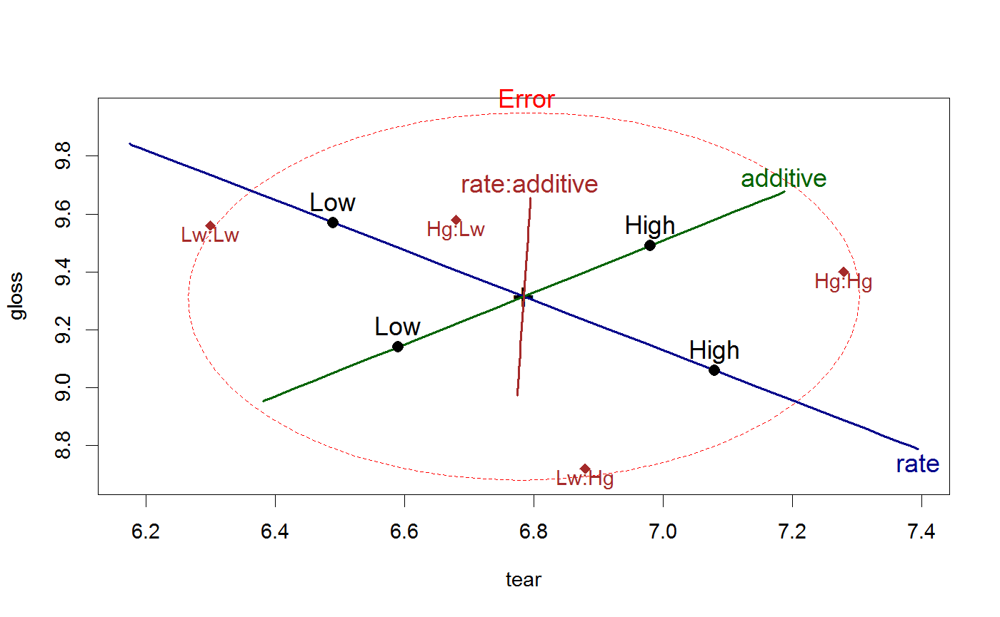

termMeans is a utility function designed to calculate
means for the levels of factor(s) for any term
in a multivariate linear model.
termMeans(mod, term, label.factors=FALSE, abbrev.levels=FALSE)
| mod | An mlm model object |
|---|---|
| term | A character string indicating a given term in the model. All factors in the term must be included in the model, even if they are in the model data frame. |
| label.factors | If true, the rownames for each row in the result include the name(s) of the factor(s) involved, followed by the level values. Otherwise, the rownames include only the levels of the factor(s), with multiple factors separated by ':' |
| abbrev.levels | Either a logical or an integer, specifying whether the levels values
of the factors in the |
Returns a matrix whose columns correspond to the response variables
in the model and whose rows correspond to the levels of the factor(s)
in the term.
aggregate, colMeans
statList, colMeansList
factors <- expand.grid(A=factor(1:3),B=factor(1:2),C=factor(1:2)) n <- nrow(factors) responses <-data.frame(Y1=10+round(10*rnorm(n)),Y2=10+round(10*rnorm(n))) test <- data.frame(factors, responses) mod <- lm(cbind(Y1,Y2) ~ A*B, data=test) termMeans(mod, "A")#> Y1 Y2 #> 1 17.00 12.25 #> 2 9.50 10.75 #> 3 13.75 2.00termMeans(mod, "A:B")#> Y1 Y2 #> 1:1 10.0 10.0 #> 2:1 3.0 19.5 #> 3:1 17.5 6.0 #> 1:2 24.0 14.5 #> 2:2 16.0 2.0 #> 3:2 10.0 -2.0termMeans(mod, "A:B", label.factors=TRUE)#> Y1 Y2 #> A1:B1 10.0 10.0 #> A2:B1 3.0 19.5 #> A3:B1 17.5 6.0 #> A1:B2 24.0 14.5 #> A2:B2 16.0 2.0 #> A3:B2 10.0 -2.0# NOT RUN { termMeans(mod, "A:B:C") # generates an error # }plastic.mod <- lm(cbind(tear, gloss, opacity) ~ rate*additive, data=Plastic) colors = c("red", "darkblue", "darkgreen", "brown") heplot(plastic.mod, col=colors, cex=1.25)# add means for interaction term intMeans <- termMeans(plastic.mod, 'rate:additive', abbrev=2) points(intMeans[,1], intMeans[,2], pch=18, cex=1.2, col="brown")text(intMeans[,1], intMeans[,2], rownames(intMeans), adj=c(0.5,1), col="brown")